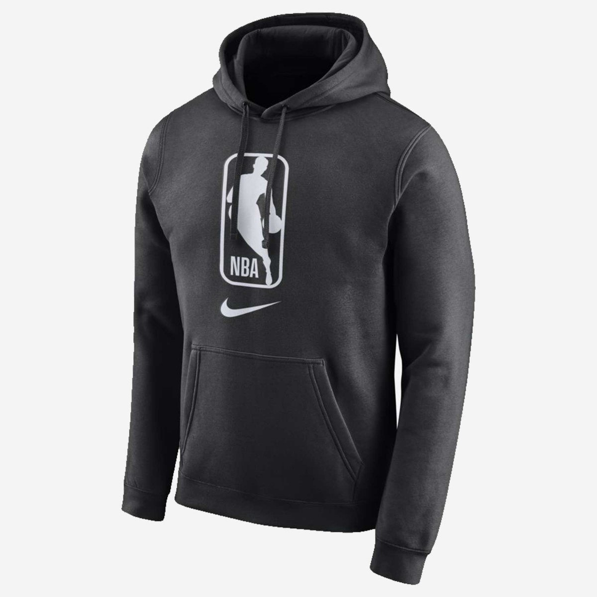
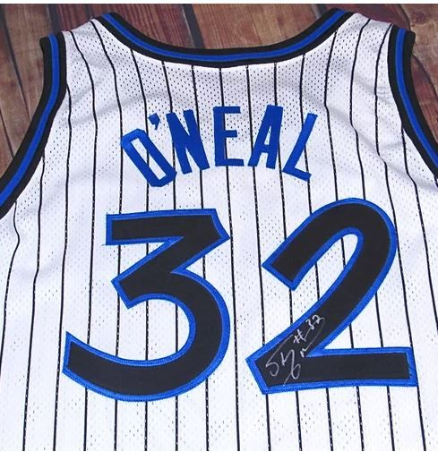

Nike fleece nba hoodie, it's made of wool.This hoodie can be used by everyone who is a fan of NBA. This hoodie is available only in the United States. It costs a $1000. This is a limited edition hoodie that is available until the end of this year. Grab some for yourself before its too late!

This is a game worn jersey by Shaquille O'neal, one of the greatest person to ever touch the basketball. He used and signed this jersey on January 1963. Sixteen years before his 45-point game against Toronto, young and unstoppable Shaq abused the Mavericks as a rookie in his first-ever astonishing game. You can place a bid starting from $10000.